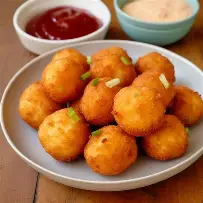

Fried Mashed Potato Balls

- A snack that I accidentally thought of and wanted to make it because it is easy to make and is very delicious.
Recipe
- 2 cups mashed potatoes
- ½ cup shredded cheese
- 2 tbsp all-purpose flour
- 2 tbsp chopped spring onions
- Salt and pepper to taste
- 1 egg
- 1 cup breadcrumbs
- Oil for frying
Steps
- Boil 3 medium potatoes for 20–25 minutes until tender, then mash.
- Mix mashed potatoes, 2 tbsp flour, 1 tbsp chopped spring onions, salt, and pepper.
- Add cheese in the center (optional) and roll into balls.
- Dip in beaten egg, then coat with breadcrumbs.
- Fry in hot oil for 3–5 minutes until golden brown.
- Drain the excess oil usingpaper towels and it is ready to be served and eaten!
Benefits
- Mashed potatoes - Provides energy and potassium.
- Shredded cheese - Rich in calcium and protein.
- All-purpose flour - Gives energy from carbohydrates.
- Spring onion - Provides vitamins and antioxidants.
- Salt - Supports nerve and muscle function.
- Pepper - Contains antioxidants and aids digestion
- Egg - High in protein and essential vitamins.
- Breadcrumbs - Adds energy and crispy texture.